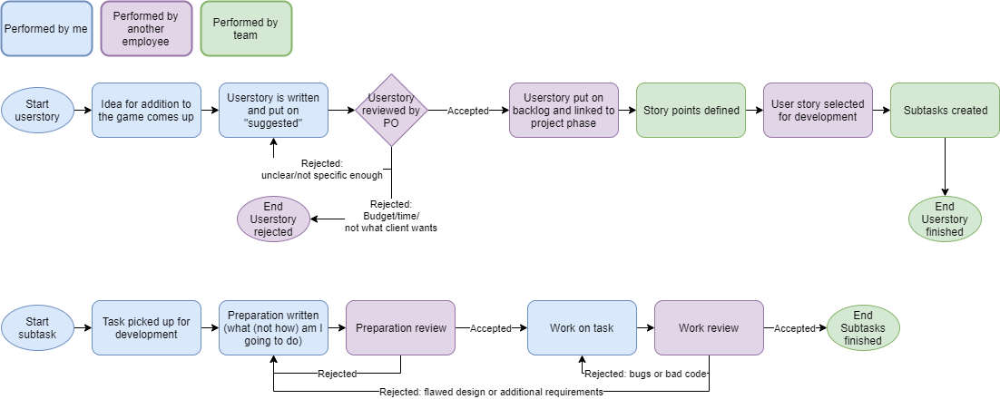

Enversed has a certain workflow to assure the best quality of products. The workflow follows Agile guidelines, and also uses agile terms, such as “user story”, “Product Owner/PO” or “backlog”. The workflow can be split into several different components. Below are the flow diagrams of a user story or subtask. These will be somewhat simplified and are always from a developer’s point of view (mine).
